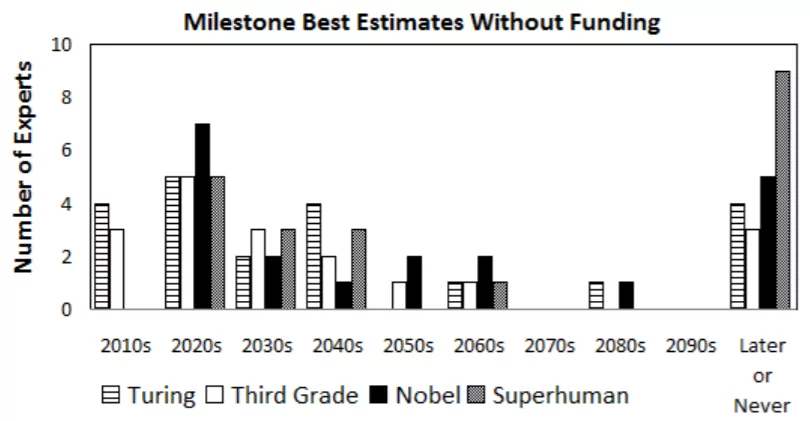
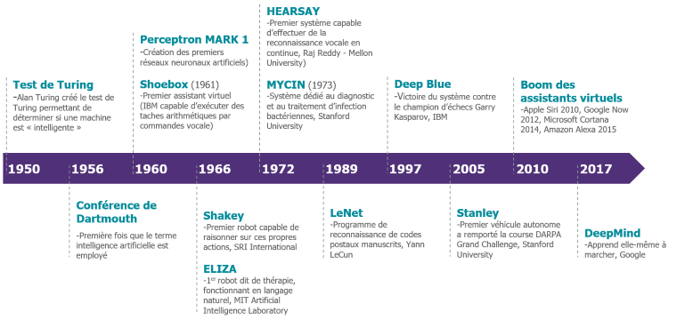

L’intelligence artificielle possède de nombreuses définitions et soulève beaucoup de débats quand il s’agit de la définir clairement. Ce terme a été employé pour la première fois en 1956, où il a été décrit comme étant toute tâche effectuée par un programme ou une machine qui, si elle avait été effectuée par un humain, aurait dû faire preuve d'intelligence pour l'accomplir. Cette définition est très large et ne permet pas de bien comprendre ce qui se cache derrière l’IA. C’est pourquoi je vais essayer au cours de cet article, de vous expliquer ce qu’est l’intelligence artificielle afin que vous puissiez comprendre notre analyse.
L'IA etroite
Tout d’abord il faut comprendre qu’il existe en réalité deux types d’intelligence artificielle distincte. La première étant l’IA dite "étroite". Elle correspond à toutes les IA que nous connaissons actuellement. Il s’agit par exemple de la reconnaissance du langage des assistants virtuels (Siri, Alexa…), des algorithmes qui vont vous recommander des produits que vous serez plus susceptible d’acheter sur le net, ou encore les voitures à conduite autonome. Ce type d’IA la est donc dependant d’un enseignement, sans lequel, elle seraint incapable de realiser ces taches simples.
Avant de présenter l’autre type d'intelligence artificielle, voici la définition du terme “intelligence” selon Francois Chollet qui est chercheur en IA chez Google :
"L'intelligence est l'efficacité avec laquelle on acquiert de nouvelles compétences pour des tâches auxquelles on ne s'était pas préparé auparavant. Elle n'est pas la compétence en soi, ce n'est pas ce que vous pouvez faire, c'est la manière et l'efficacité avec lesquelles vous pouvez apprendre de nouvelles choses."
On remarque alors que l’IA étroite n’atteint pas les standards de l’intelligence définie ici.
L'IA générale
L’intelligence artificielle “générale” cependant, se rapproche bien plus d’une intelligence humaine. Elle serait capable d’effectuer des tâches radicalement opposées l’une de l’autre tout comme vous. Elle pourrait par exemple savoir lire, être douée en cuisine, gagner des tournois de Super Smash Bros et avoir des compétences en programmation dans le langage C++ avec la librairie Qt. Néanmoins elle doit surtout pouvoir apprendre de sa propre expérience, lui permettant de réagir à des situations inattendues. C’est ce type d’IA qui est généralement dépeinte dans les films de science-fiction. Mais je vous rassure, elle n’existe pas encore. De nombreux sondages ont été faits au fils des ans auprès des chercheurs et des entrepreneurs dans le domaine. Et il est intéressant de constater que tous les chercheurs pensent que l’IA générale apparaîtra avant 2060, néanmoins dans les sondages les plus récents les réponses sont moins unanimes et penchent plus pour après 2060. On remarque aussi que les entrepreneurs sont plus optimistes sur la question et pensent que ca arrivera plutôt. Il y a aussi un facteur géographique au reponses, en effet on remarque qu’en Asie, les chercheurs attendent cette avancée pour dans 30 ans tandis qu' en amérique ils l’attendent pour dans 70 ans.
 Exemple de sondage (2009)Dans le domaine médical
Cette intelligence artificielle va changer le monde de bien des manières mais intéressons-nous un peu plus à propos du domaine médical. En effet l’IA pourrait aider les radiologues à détecter les tumeurs sur les radiographies, les chercheurs à repérer les séquences génétiques liées aux maladies et à identifier les molécules qui pourraient conduire à des médicaments plus efficaces.De plus une recente avancée de AlphaFold2, une IA de google devrait rendre le processus de développement de nouveaux médicament beaucoup plus rapide. On parle ici de faire passer de plusieurs mois à seulement quelques heures le temps nécessaire à une des étapes du processus. De plus, il existe désormais des intelligence artificielle qui vont assister le médecin lors des consultations en ressortant le dossier patient de la base de donnée sans action du médecin. Ou encore écouter la consultation afin d’ajouter les informations importantes dans le dossier patient automatiquement. Il existe de nombreuses manières d’utiliser l’IA dans ce domaine ce qui pourrait entre autre permettre de lutter contre la désertification médicale.
Pour conclure, l’intelligence a énormément évolué durant ces dernières années (voir frise ci-dessus) et elle tend à augmenter beaucoup plus rapidement à l'avenir. Et ce afin d’aider les hommes dans de nombreux secteur car les application de l’IA sont quasiment infinie.